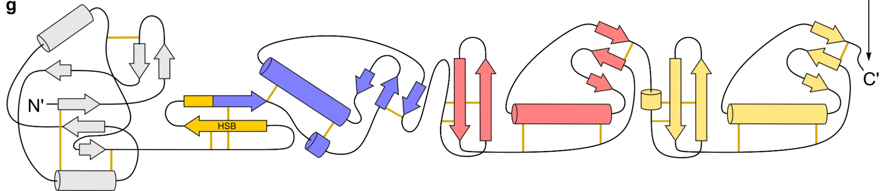
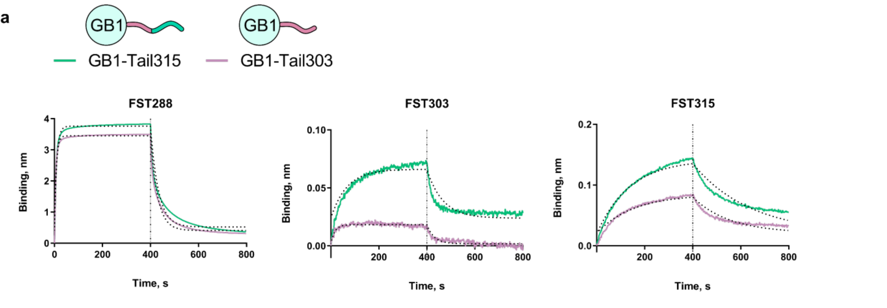
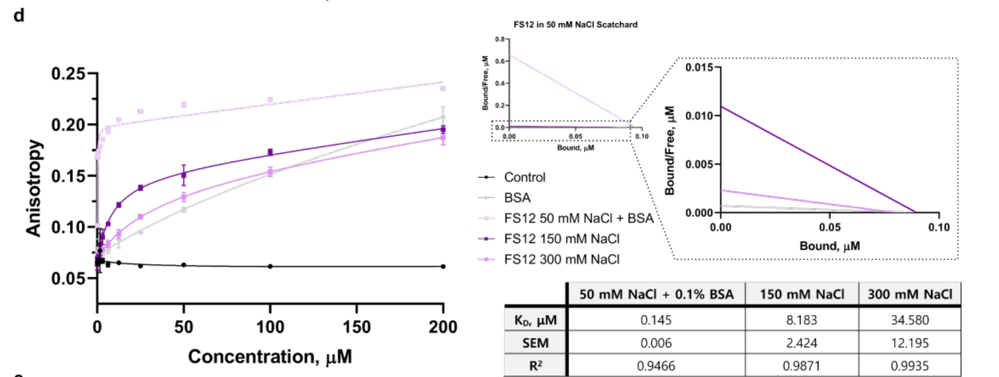
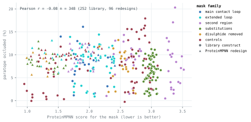
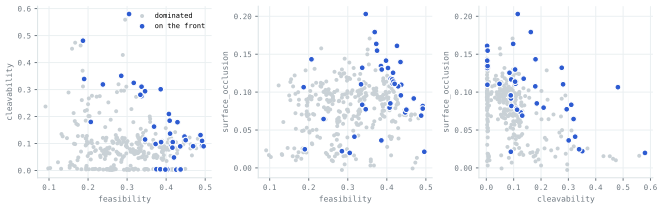

Computational design of protease-responsive nanobodies
A proposed pipeline for designing nanobodies that are masked in circulation and restored to antigen binding by proteolysis, together with a partial implementation on an experimental nanobody–antigen complex.
Previous research
During my PhD at the University of Cambridge I investigated how structural components of TGF-β superfamily receptors and their extracellular inhibitors contribute to biological function. I used SAXS-based structural modelling and biophysical assays to characterise the C-terminal tail of follistatin, showing that it interacts with the FS1 domain and alters heparan sulphate binding, and that SEC-SAXS data are best described by two distinct solution conformations. I also investigated the contribution of receptor transmembrane helices to assembly and signalling, for which I developed a bacterial signalling assay for transmembrane helix heterodimerisation.
The follistatin work is directly relevant here, since it concerns an intramolecular interaction that regulates access to a protein-binding surface, which is the arrangement the present design introduces deliberately.
Background: a tethered competitive regulator, measured PhD work on follistatin, which solves this same two-state problem naturally.
The construct on this page needs a tethered module that binds its own protein tightly enough to block and weakly enough to let go. Follistatin already does this. Its isoforms differ only at the C-terminus, and the longest, FST315, carries an acidic tail that folds back onto the FS1 domain — the same surface that binds heparan sulphate. The tail is an endogenous mask.




D = 145 nM at 50 mM NaCl, 8.2 µM at 150 mM and 34.6 µM at 300 mM, indicating a largely electrostatic interaction.">


Research question and molecular architecture
The question concerned nanobodies against snake venom toxins that would remain inactive in circulation and become active at the site of a bite, where the local environment differs from plasma. Three environmental cues were proposed: acidic pH, raised protease activity and local hypoxia.
| environmental cue | consideration | decision |
|---|---|---|
| Acidic pH | The physiological range at a bite site would require further characterisation before a switching threshold could be chosen. | Not selected |
| Protease activity | Proteolysis is irreversible, which makes activation a single committed event rather than an equilibrium, and venom metalloproteinases are themselves part of the pathology being treated. | Selected |
| Hypoxia | Would require an oxygen-sensitive molecular mechanism suitable for a small secreted protein. | Not selected |
I propose to develop a computational approach for designing protease-responsive nanobodies while preserving their original antigen-binding properties. Responsiveness is introduced by attaching a masking domain through a protease-cleavable linker. The mask should prevent antigen binding while attached and dissociate once the linker is cleaved. To make the approach applicable to more than one nanobody, the antigen-binding domain is left unchanged and only the regulatory components are designed, so that the architecture and the computational methods transfer even though individual mask sequences will not.


The two states impose opposing requirements on the mask. Because the mask is tethered it is held near the paratope at a high local concentration, estimated at 13 mM for this construct, so a weak interaction is sufficient to block antigen binding. After cleavage that local concentration is lost and the mask must dissociate, which an interaction of high affinity would not do. The design target is therefore a bounded range of mask affinity rather than a maximum, which is the opposite of the objective most protein design methods optimise.
Proposed computational pipeline
The pipeline consists of five modules. Candidate constructs are generated, three independent scoring functions assess structural feasibility, the interaction between mask and nanobody, and the susceptibility of the linker to proteolysis, and the three scores are combined by multiobjective ranking. The output is a list of candidate sequences with their associated scores. Each module can use several computational methods, so individual methods can be compared or replaced without altering the pipeline.
| module | objective | methods |
|---|---|---|
| 01. Estimation of the usable mask affinity | Define the attachment point, linker length and the range of mask affinity that can satisfy both states | Interface analysis, polymer models of the tether, competitive binding equilibria |
| 02. Generation of candidate constructs | Generate candidate masking architectures | RFdiffusion, ProteinMPNN, BindCraft, peptide language models, evolutionary approaches |
| 03. Structural feasibility | Assess preservation of the VHH fold and structural plausibility | ESMFold, AlphaFold, Boltz, BioEmu, Rosetta, FoldX |
| 04. Mask binding and release | Assess binding in the tethered and cleaved states | Complex prediction, interface analysis, thermodynamic modelling |
| 05. Linker cleavability | Assess protease responsiveness and selectivity | CleaveNet, MEROPS, substrate specificity models, accessibility analysis |
| 06. Multiobjective ranking | Select candidates satisfying the three objectives | Hard filtering, Pareto optimisation, uncertainty and diversity-based selection |
The three scores are not combined into a single value, since a high score on one objective would otherwise compensate for failure on another. Pareto optimisation identifies the nondominated candidates, which is a set rather than an ordered list, so a further criterion would be required to order candidates within a front.
Worked computational example
The pipeline was implemented in part and applied to Co-crystal of broadly neutralizing VHH in complex with short neuro, a 2.5 Å X-ray structure deposited in 2025. All results below are computational. No construct has been expressed and no affinity, expression level or cleavage rate has been measured.
ReferenceStructural characterisation of the complex

Module 01Estimation of the usable mask affinity


Model and equations
Ceff(d) = 1660.54 · (3 / 2π⟨r²⟩)3/2 · e−3d²/2⟨r²⟩
Pmasked = Ceff / (Ceff + KD,M)
Pbound = (A/KD,A) / (1 + A/KD,A + M/KD,M)
The bounds correspond to at most 1% of the construct unmasked before cleavage and at least 90% antigen-bound afterwards.

Module 02Generation of candidate constructs

| mask | sequence | kind |
|---|---|---|
| epi1 | CGCPTVKPGIKLNCCT | epitope graft |
| epi1_half | CGCPTVKP | truncated control |
| epi1_noCys | SGSPTVKPGIKLNSST | epitope graft |
| epi1_scram | PIVKCKNGGCCTTLCP | scrambled control |
| epi2 | ETN | epitope graft |
| polyG | GGGGGGGG | inert control |
Module 03Structural feasibility
Conformational heterogeneity
A single predicted structure does not describe the conformational distribution of a tethered peptide. Ensemble methods such as BioEmu, or molecular dynamics, would be the appropriate extension of this module and are not implemented here.
Module 04Mask binding and release

| construct | antigen contacts on paratope | mask contacts on paratope |
|---|---|---|
| free nanobody, control | 0.81 | — |
| epi1_L5 | 0.74 | 0.00 |
| epi1_L15 | 0.85 | 0.12 |
| polyG_L5 | 0.77 | 0.25 |
Complex prediction without alignments
When every chain was predicted without an alignment the free nanobody control placed only 7% of its antigen contacts on the known paratope. An alignment over the whole fusion would require submitting the designed sequence to a remote server, so the construct was modelled as three chains joined by an explicit covalent bond, allowing alignments for the nanobody and the antigen while the designed peptide takes none.
Each case is a single prediction rather than a sampled ensemble, and the mask and antigen are supplied simultaneously, so the result describes an assembly at equilibrium rather than competition over time.
Module 05Linker cleavability

The two quantities favour different linker lengths: the affinity window is widest at 14 residues, while accessibility is highest at 5.
Module 06Multiobjective ranking

SummaryImplementation status
| module | implemented | remaining work |
|---|---|---|
| 01 Affinity estimation | Interface geometry and tether model | Validation against measured mask affinities |
| 02 Generation | Candidate library and ProteinMPNN redesign | De novo masking architectures |
| 03 Structural feasibility | Static predictions and structural descriptors | Conformational modelling; experimental expression data |
| 04 Mask binding | Occlusion and complex prediction | Reliable affinity and release prediction |
| 05 Linker cleavability | Structural accessibility | Protease-specific recognition and selectivity |
| 06 Ranking | Pareto analysis on preliminary scores | Ranking on validated functional scores |
Set aside: 9GCN, where the geometry defeats the measurement The pipeline was run end to end on this complex first. Both controls failed, for a reason worth keeping.
VHH TPL1158_01_C09 with alpha-cobratoxin, 3.0 Å. The paratope sits almost entirely in CDR3 (11 of 16 residues, with CDR2 contributing none) — and the N-terminal residue Q1 is itself part of the paratope, burying 52 Ų.
That makes masking trivially easy and measuring it impossible. Any peptide tethered at that terminus starts on top of the binding site, whatever its sequence, so occlusion cannot tell a designed mask from a random one.
| mask kind | mean occlusion % | n |
|---|---|---|
| inert control | +18.1 | 5 |
| scrambled control | +16.1 | 5 |
| truncated control | +15.9 | 5 |
| epitope graft | +14.3 | 10 |
The inert poly-glycine control occluded +18.1% of the paratope against +14.3% for the designed grafts and +16.1% for the scrambled ones. The control scored highest. There is no separation to rank on.
The second control failed too. Predicting the free nanobody with its toxin should have reproduced a pose the crystal structure already shows. Only 28% of the predicted contacts landed on the known paratope, so the complex module could not adjudicate masking here either.
Why it is still here. The constraint module had already flagged it: the N-terminus was 0.0 Å from the nearest paratope residue, against 42 Å for the C-terminus. That number was visible before a single construct was folded, and it is the criterion the replacement system was chosen on. A pipeline that measures the geometry first can tell you that a target is unsuitable before you spend anything on it.
Experimental work
I would work with experimental PhD students to establish measurements corresponding to the three scoring functions: protein stability and developability, mask interaction and dissociation, and protease responsiveness. Purification behaviour and gel analysis address the first, biolayer interferometry in the presence and absence of the protease addresses the second and third.
These data would allow the predictive ability of individual computational methods to be assessed and would identify which parts of the pipeline require development. As more measurements accumulate, I would investigate whether sequence and structural representations of the constructs can be used to train more accurate scoring functions and improve the selection of subsequent candidates.
Sources
- Ahmadi S., Burlet N.J., Benard-Valle M. et al. Nanobody-based recombinant antivenom for cobra, mamba and rinkhals bites. Nature 647:716–725 (2025). Source of PDB 9RIU, used here.
- Damsbo A., Burlet N.J., Fernández-Quintero M.L. et al. Structural mechanisms behind the neutralisation of long-chain α-neurotoxins. Communications Chemistry (2025). Source of PDB 9GCN.
- Lin Z. et al. Evolutionary-scale prediction of atomic-level protein structure with a language model. Science 379:1123–1130 (2023).
- Dauparas J. et al. Robust deep learning-based protein sequence design using ProteinMPNN. Science 378:49–56 (2022).
- Wohlwend J. et al. Boltz-1 and Boltz-2, open biomolecular interaction models. github.com/jwohlwend/boltz
- Zhou H.-X. Loops in proteins can be modeled as worm-like chains. Journal of Physical Chemistry B 105:6763–6766 (2001).
- Shrake A., Rupley J.A. Environment and exposure to solvent of protein atoms. Journal of Molecular Biology 79:351–371 (1973).
- Stepurko N. Molecular insights into signalling mechanisms within the TGF-β superfamily. PhD thesis, University of Cambridge (2023). 10.17863/CAM.99087